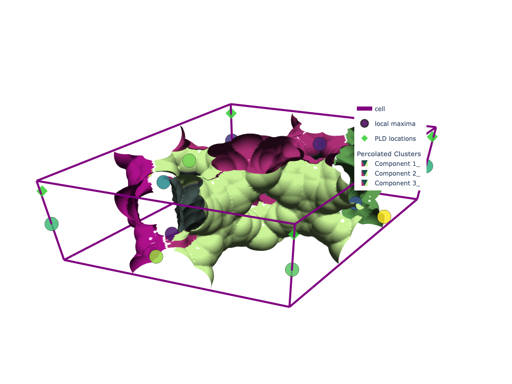
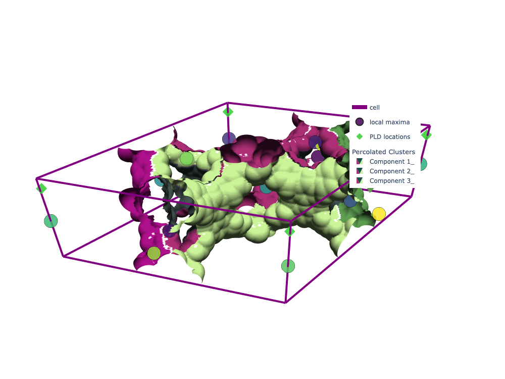

get_pore_dia_mgr_winding)._merge_periodic_faces.percolation_all_axes_periodic.class UnionFind:def __init__(self, n):n elements.def find(self, x):x with path compression for efficiency.def union(self, x, y):x and y by updating parent pointers.def union_pairs(self, a, b):(x, y) in arrays a and b, merge their sets._merge_periodic_faces(labeled, axis, uf):percolation_all_axes_periodic(binary):class UnionFind:
Implements the disjoint-set (union-find) data structure for efficient merging of region labels.
def __init__(self, n):
Initializes the parent array so each element is its own parent.
self.parent = np.arange(n)
Each label starts as its own cluster.
def find(self, x):
Finds the root of label x with path compression.
root = x
Start with the input label.
while self.parent[root] != root:
Traverse up the parent chain until the root is found.
root = self.parent[root]
Move to the parent.
while self.parent[x] != x:
Path compression: update parent pointers to point directly to the root.
x, self.parent[x] = self.parent[x], root
Set parent of x to root and move up the chain.
return root
Return the root label.
def union(self, x, y):
Merges the sets containing x and y.
xr, yr = self.find(x), self.find(y)
Find roots of both labels.
if xr != yr:
If they are in different sets, merge them.
self.parent[yr] = xr
Set the parent of yr to xr, merging the sets.
def union_pairs(self, a, b):
Merges all pairs of labels from arrays a and b.
for x, y in zip(a, b):
Iterate over pairs.
self.union(int(x), int(y))
Merge each pair using union.
def _merge_periodic_faces(labeled, axis, uf):
Merges region labels that touch across periodic faces of the specified axis.
if labeled.shape[axis] < 2:
If the grid is too thin along this axis, nothing to merge; return early.
slicer_lo = [slice(None)] * 3
Create a slicer for the lower face (all elements except along the axis).
slicer_hi = [slice(None)] * 3
Create a slicer for the upper face.
slicer_lo[axis] = 0
Set the lower face index for the axis.
slicer_hi[axis] = labeled.shape[axis] - 1
Set the upper face index for the axis.
face_lo = labeled[tuple(slicer_lo)]
Extract the lower face labels.
face_hi = labeled[tuple(slicer_hi)]
Extract the upper face labels.
mask = (face_lo != 0) & (face_hi != 0)
Find positions where both faces have nonzero (valid) labels.
if not np.any(mask):
If no overlap, nothing to merge; return.
idx_lo = face_lo[mask]
Get the lower face labels at overlap positions.
idx_hi = face_hi[mask]
Get the upper face labels at overlap positions.
if idx_lo.size == 0:
If no valid pairs, return.
pairs = np.stack((idx_lo, idx_hi), axis=1)
Stack the pairs of touching labels.
unique_pairs = np.unique(pairs, axis=0)
Remove duplicate pairs.
uf.union_pairs(unique_pairs[:, 0], unique_pairs[:, 1])
Merge the touching labels using union-find.
def percolation_all_axes_periodic(binary):
Main function to check percolation along all axes with periodic boundaries.
struct = generate_binary_structure(3, 1)
Create a 3D connectivity structure for labeling.
labeled, nlab = label(binary, structure=struct)
Label connected regions in the binary grid.
if nlab == 0:
If no regions, return empty results.
axes = {"x": 0, "y": 1, "z": 2}
Map axis names to indices.
results = {} and unioned_labels_dict = {}
Prepare output containers.
for name, axis in axes.items():
Loop over each axis.
uf = UnionFind(nlab + 1)
Create a union-find structure for label merging.
for other_axis in range(3):
Loop over transverse axes.
if other_axis == axis: continue
Skip the axis being checked.
_merge_periodic_faces(labeled, other_axis, uf)
Merge labels across periodic faces for transverse axes.
remap = np.arange(nlab + 1)
Prepare a remapping array.
for lbl in range(1, nlab + 1): remap[lbl] = uf.find(lbl)
Remap each label to its union-find parent.
unioned_labels = remap[labeled]
Apply remapping to the labeled grid.
unioned_labels_dict[name] = unioned_labels
Store the remapped labels for this axis.
faceA = set(np.unique(np.take(unioned_labels, 0, axis=axis))) - {0}
Get unique labels on the lower face.
faceB = set(np.unique(np.take(unioned_labels, -1, axis=axis))) - {0}
Get unique labels on the upper face.
results[name] = faceA.intersection(faceB)
Percolating clusters are those present on both faces.
return results, unioned_labels_dict
Return percolation results and remapped labels.
def percolation_winding_multidigraph(G):percolates = {"x": False, "y": False, "z": False}loops = []acc_offsets = {}parent = {}visited = set()undirected = nx.Graph(G.to_undirected(as_view=True))for comp_nodes in nx.connected_components(undirected):root = next(iter(comp_nodes))if root in visited: continuevisited.add(root)parent[root] = Noneacc_offsets[root] = (0, 0, 0)queue = deque([root])while queue:u = queue.popleft()u_acc = np.array(acc_offsets[u], dtype=int)for nbr, key, canonical_offset, delta, forward in _iter_neighbor_edges(G, u):ced = CanonicalEdgeID.from_nodes(u, nbr, key)if nbr not in comp_nodes: continueimplied = tuple((u_acc + np.array(delta, dtype=int)).tolist())if nbr not in visited:visited.add(nbr)parent[nbr] = uacc_offsets[nbr] = impliedqueue.append(nbr)continuecurrent = acc_offsets[nbr]if implied == current: continuewinding_array = np.array(implied, dtype=int) - np.array(current, dtype=int)winding = tuple(int(x) for x in winding_array)if winding == (0, 0, 0): continuecycle_nodes = _tree_path(u, nbr, parent)loop_info = {...}loops.append(loop_info)if winding[0] != 0: percolates["x"] = Trueif winding[1] != 0: percolates["y"] = Trueif winding[2] != 0: percolates["z"] = Trueunique_loops = []seen = set()for loop in loops:key = (loop["winding"], tuple(loop["nodes"]), loop["edge"])if key in seen: continueseen.add(key)unique_loops.append(loop)return percolates, unique_loops, acc_offsetsbuild_base_region_labels_from_results.The two figures were built in the previous chunk (saved as Plotly JSON because the run is slow). Static renders:


mofography.mofography/compute.py, mofography/winding_percolation.pyThis documentation is not comprehensive by any means.Feel free to ask for more details or additional examples!